Task-Driven Modular Robot Configuration Under Actuator and Coupling Limits
Boyuan Wang · Duke University, Mechanical Engineering and Materials Science
Every robot here is built from one kind of servo module. For each task, a search picks how many modules to use and how they connect, and designs the 3D-printed links between them, checking motor torque and the strength of the magnetic couplers that join the parts. For a new task the links are reprinted and the modules kept.
Grey boxes are the modules, blue parts are printed links. Motion in this gallery is simulated in MuJoCo. Complete robot configurations have not been built and validated; separate magnetic-coupler prototypes have undergone bench testing.
Arms
The same module type, different printed links for each task.
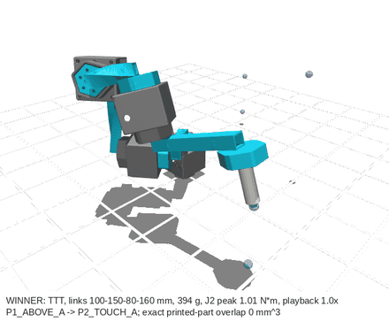
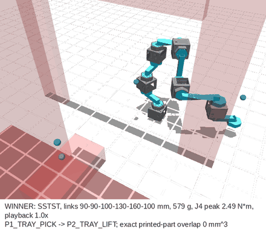
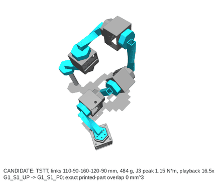
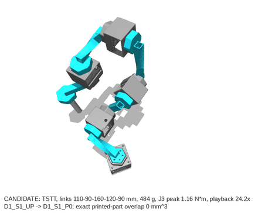
Walkers
The same modules again. The end of the last link is the foot. Each servo follows a sine wave tuned in simulation, not a full walking controller.
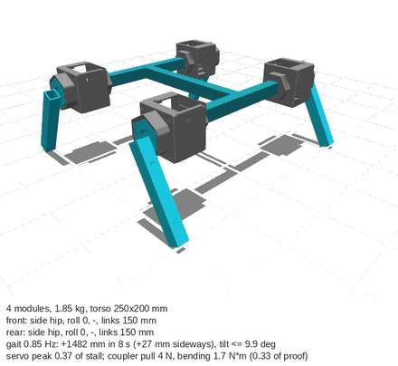
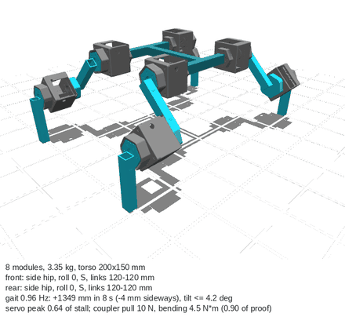
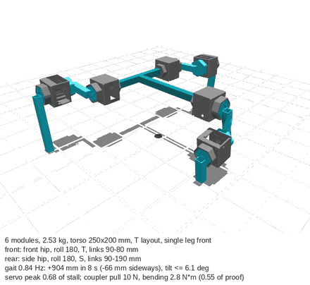
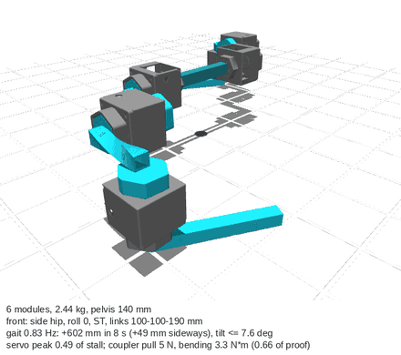
Beyond fixed links
Letting the printed parts take any shape cuts the number of modules.
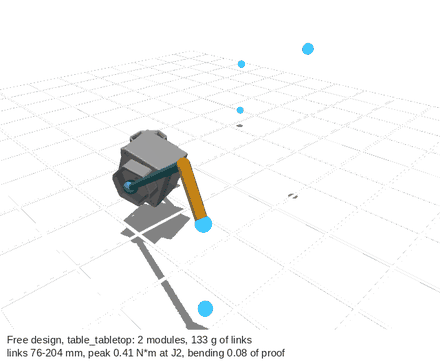
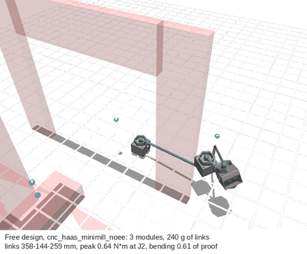
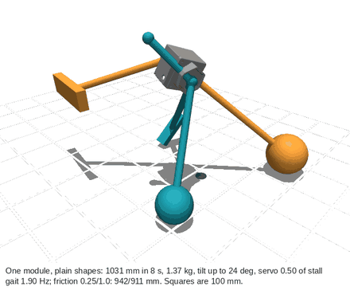
Printing estimates
Printer time only: assembly, wiring and fitting the magnets are not included, and no full build has been timed. A new task needs only new links; the modules are reused.
| Robot | Modules | Printed parts | Link printing | PLA, with supports | From scratch, with modules |
|---|---|---|---|---|---|
| Table arm | 4 | 4 links + 60 mm rod | about 15 h | about 310 g | about 31 h |
| Writing arm | 5 | 5 links + 130 mm rod | about 18 h | about 370 g | about 38 h |
| CNC arm | 6 | 6 links | about 18 h | about 370 g | about 42 h |
| Four legs, one module each | 4 | 4 leg links; torso not included | about 13 h | about 270 g | about 29 h |
| Four legs, two modules each | 8 | 8 leg links; torso not included | about 25 h | about 500 g | about 57 h |
| Three legs, two modules each | 6 | 6 leg links; torso not included | about 19 h | about 380 g | about 43 h |
| Two legs | 6 | 6 leg links; torso not included | about 19 h | about 380 g | about 43 h |
Built one by one, these seven robots would need 39 modules, about 156 printer-hours of module parts. One set of 8 modules, the most any of them uses, can become any one of them; after that, each new robot costs only its links.
- Scaled from one sliced link: a 110 mm link prints in 3 h 1 min with 47.4 g of PLA, 61.2 g with supports.
- A link's volume grows with its length L as 45.3 + 0.148 L cm³, L in mm; most of it is the two couplers. Time and filament are taken in proportion to volume.
- Tool rods are counted as links of their length, so the arm figures run a little high.
- The printed parts of one actuator module take about 4 h.
- Legged robots: legs only. The torso has no printable part designed yet. Free-shape parts are not estimated.